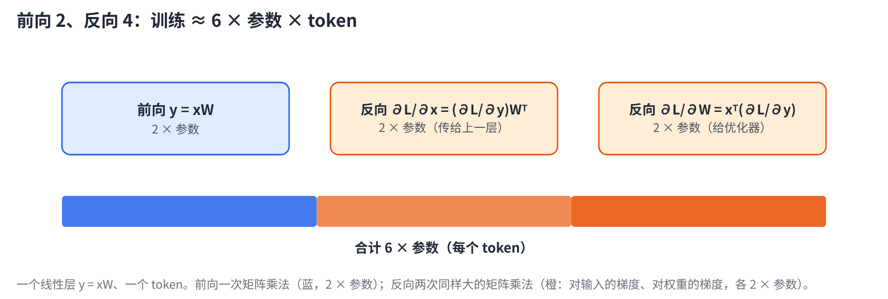
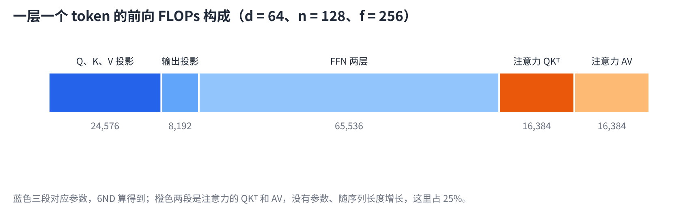
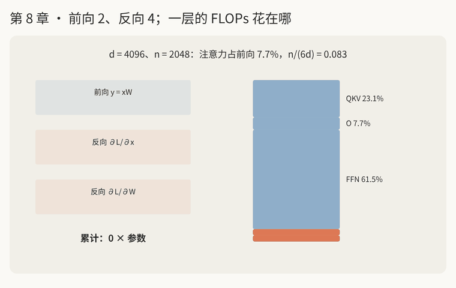

第 8 章 · 数 FLOPs：训练 ≈ 6 × 参数 × token 数从哪来，注意力什么时候不能忽略
本地运行
git clone https://github.com/wikieden/beyond-transformer
cd beyond-transformer/code/notebooks
pip install jupyterlab torch numpy
jupyter lab ch08_flops.ipynb也可以下载后直接用 VS Code 打开 .ipynb 运行。需要 GPU 的章节在 Colab 里选「代码执行程序 → 更改运行时类型 → GPU」。
本章回答：训练一个模型要算多少次乘加？人们常说“训练 FLOPs ≈ 6ND”，这个 6 是怎么来的？前向为什么是 2、反向为什么是 4？注意力的 QKᵀ 和 AV 不对应任何参数，“6ND”把它们漏掉了，什么时候漏得起、什么时候漏不起？
讲解日期：2026-11-25 · 上一章：第 7 章 把 Transformer 写成伪代码 · 下一章：第 9 章 BERT
对应原文：scaling-bookllm-full-stack/materials/code/scaling-book/transformers.mdL151（训练 6NPM、推理 2NPM：前向 2、反向 4）、L241（逐项相加得到 6 × token 数 × 参数量）；nanoGPTtransformer-deep-dive/materials/code/nanoGPT/repo/transformer_sizing.ipynb（逐项计数）；CS336 a1 handoutcs336-spring2025/materials/text/cs336_spring2025_assignment1_basics.txt§3.6 Problem (transformer_accounting) L1316；前作 第 23 章 复杂度
本章缩写：FLOPs = FLoating-point OPerations（浮点运算次数；注意和 FLOP/s = 每秒浮点运算次数区分）；N = 参数量；D = 训练的 token 数；d = 模型宽度（\(d_{model}\)）；L = 层数；n = 序列长度；f = FFN 中间层宽度；V = 词表大小；MAC = Multiply-ACcumulate（乘加：一次乘法 + 一次加法，算 2 FLOPs）。全部缩写见 附录 · 缩写与术语表
讲解
第一步：一次矩阵乘法 = 2mnk 次运算（2026-11-25）
类比：算账单。 一张 m 行的订单表，每行 k 个商品数量，乘一张 k × n 的价格表，得到 m × n 个总价。每个总价要做 k 次“数量 × 单价”，再把 k 个结果加起来。
\((m \times k)\,@\,(k \times n)\)：输出 m·n 个数，每个数 k 次乘法、k 次加法：
数字演示：(2 × 4) @ (4 × 3)，真的一格一格数：乘法 24 次、加法 24 次，合计 48 = 2·2·3·4。（严格说每个数只要 k − 1 次加法，但从 0 开始累加时是 k 次；大矩阵下这点差别忽略不计，惯例就按 2mnk 算。）
落到一个 token 上：一个 token 的向量（1 × d）乘一个 d × d 的权重矩阵，是 2d² FLOPs。权重矩阵有 d² 个参数，所以：每个参数、每个 token，前向 2 FLOPs（一次乘、一次加）。
一句话：矩阵乘法 2mnk；一个 token 经过一个权重矩阵，每个参数贡献 2 FLOPs。
第二步：前向 2N，反向 4N，训练 6N（每个 token）（2026-11-25）
反向为什么是前向的 2 倍：第 2 章说，线性层 y = xW 的反向要算两样东西：
| 要算什么 | 公式 | FLOPs（一个 token，W 是 d × d） |
|---|---|---|
| 前向 | y = xW | 2d² |
| 反向：对输入的梯度（传给上一层） | ∂L/∂x = (∂L/∂y)Wᵀ | 2d² |
| 反向：对权重的梯度（给优化器） | ∂L/∂W = xᵀ(∂L/∂y) | 2d² |
反向是两次和前向一样大的矩阵乘法，所以是 4d²。合起来每个参数、每个 token：前向 2 + 反向 4 = 6（scaling-book L151）：
数字演示（玩具模型：d = 64、L = 2、n = 128、V = 1000、f = 256，嵌入和输出层共享）：
| 量 | 数 |
|---|---|
| 参数 N | 2 × (4·64² + 2·64·256) + 1000·64 = 162,304 |
| 每个 token 前向实际 FLOPs（含注意力、输出层） | 390,144 |
| 2N | 324,608 |
| 训练 100 万 token ≈ 6N × 10⁶ | 9.74 × 10¹¹ |
实际的前向比 2N 多了约 20%，多出来的主要是下一步要讲的注意力。

图 8-1 · 一个线性层、一个 token 的计算量。前向一次矩阵乘法（蓝，2N）；反向两次（橙：对输入的梯度 2N，对权重的梯度 2N）。合起来 6N一句话：前向每个参数每个 token 2 FLOPs；反向要分别算对输入和对权重的梯度，各一次同样大的矩阵乘法，共 4；训练 ≈ 6 × 参数 × token。
第三步：一层里的 FLOPs 都花在哪（2026-11-25）
一层、一个 token 的前向（d = 64、n = 128、f = 256）：
| 部分 | 公式 | FLOPs | 对应参数吗 |
|---|---|---|---|
| Q、K、V 投影 | 2 · 3d² | 24,576 | 是（3d² 个参数） |
| 输出投影 | 2 · d² | 8,192 | 是 |
| FFN 两层 | 2 · 2df | 65,536 | 是 |
| 注意力 QKᵀ | 2 · n · d | 16,384 | 否 |
| 注意力 AV | 2 · n · d | 16,384 | 否 |
| 合计 | 131,072 |
QKᵀ 和 AV 是“激活乘激活”：这个 token 的 q 要和 n 个 k 各做一次 d 维点积（2nd），再用 n 个权重把 n 个 v 加起来（2nd）。它们没有参数，所以 6ND 数不到它们。而且它们随序列长度 n 线性增长（整段序列就是 n² 增长，前作第 23 章）。
（因果 mask 下，第 t 个 token 只看前 t 个，平均只有 n/2；上面按看满 n 个算，是上限。）

图 8-2 · 玩具配置下一层一个 token 的前向 FLOPs。蓝色三段对应参数（6ND 算得到），橙色两段是注意力的 QKᵀ 和 AV（6ND 漏掉的部分），这里占 25%一句话：一层的 FLOPs 大部分花在 Q、K、V、O 和 FFN 的矩阵乘法上（对应参数）；注意力的 QKᵀ、AV 不对应参数，随序列长度增长。
第四步：注意力什么时候不能忽略：看 n / (6d)（2026-11-25）
常见配置 f = 4d。一层的参数矩阵有 \(4d^2 + 2\cdot d\cdot 4d = 12d^2\) 个参数，前向每个 token \(24d^2\) FLOPs；注意力是 \(4nd\)。两者的比值：
数字演示：
| 序列 n | 宽度 d | n / (6d) | 意思 |
|---|---|---|---|
| 128 | 64 | 0.333 | 玩具模型：宽度小，注意力已经占三分之一 |
| 2,048 | 4,096 | 0.083 | 常见的 7B 级模型、2k 上下文：注意力只占 8%，6ND 很准 |
| 32,768 | 4,096 | 1.333 | 32k 长上下文：注意力比所有参数矩阵还多 |
所以：短上下文的大模型，6ND 很准；上下文长度接近 6 倍宽度时，注意力就和参数矩阵一样贵了。这也是第 31–36 章（高效注意力）和第 37–43 章（线性注意力、Mamba）要解决的问题。
场景代码：用 PyTorch 自带的 FLOP 计数器核对（真实库调用；本书环境没装 torch，没跑过）：
from torch.utils.flop_counter import FlopCounterMode
with FlopCounterMode(display=False) as fc:
model(x).sum().backward() # 一次前向 + 反向
print(fc.get_total_flops() / (6 * n_params * x.numel())) # 短序列时接近 1，长序列时明显大于 1
给定配置算出参数量、前向 / 训练 FLOPs、KV cache，并画出“注意力占比随序列长度变化”的曲线，是里程碑 T-M1 的内容；a1 §3.6 的 transformer_accounting 题也要你逐项数一遍。
一句话：f = 4d 时注意力和参数矩阵的 FLOPs 之比是 n/(6d)：上下文远短于 6 倍宽度时 6ND 很准，接近或超过时注意力不能忽略。
动画演示：一个 token 穿过矩阵乘法，计数器往上跳

可交互版：animations/08-flops.html（▶ 播放：前向一次、反向两次；滑块调宽度 d，看一层里各部分的比例）。
怎么看：
- 左边一个 token（1 × d）乘权重矩阵（d × d），每格亮一下计数器 +2（第一步）；
- 前向走完后，反向又走两遍：一遍算对输入的梯度、一遍算对权重的梯度，计数器停在 6 × 参数（第二步）；
- 右边的条形图是一层里 QKV、O、FFN、注意力各自的 FLOPs，拖 d 看注意力那一段的占比怎么变（第三、四步）。
练习与作答记录
题 1（第一步）：(128 × 512) @ (512 × 2048) 要多少 FLOPs？
题 2（第二步）：一个 10 亿参数的模型训练 200 亿 token，大约要多少 FLOPs？一张每秒 3 × 10¹⁴ FLOPs 的卡、利用率 40%，要训多少天？
题 3（第四步）：d = 2048、f = 4d，序列多长时注意力的 FLOPs 和参数矩阵一样多？
口诀
矩阵乘法 2mnk，一个参数一个 token 两次运算。
反向两回同样大：一回传给上一层，一回交给优化器；前二后四，训练六 N D。
QK 和 AV 没参数，随序列长度涨。
比一比 n 和六倍宽：远小于就忽略，接近了就算上。
本章复习卡片
必背：B32–B33（B32 2mnk 与 6ND 的来历；B33 一层 FLOPs 的构成与 n/(6d)）。练习做完后，按答错、卡住的地方再补。
附录 · 延伸阅读
留给以后深入学习用，不影响本章主线。★ 是建议先读的。
推荐阅读
| 读什么 | 读哪里 | 读它为了什么 |
|---|---|---|
| ★ scaling-book《Transformer Math》 | L151、L241 及前后 | 6ND 的逐项推导、反向的计算量 |
★ nanoGPT transformer_sizing.ipynb |
全部 | 一个真实模型逐项数参数和 FLOPs |
| CS336 a1 handout | Problem (transformer_accounting) L1316 | 作业要你自己数一遍 |
| 前作 第 23 章 复杂度 | 全部 | 注意力的 n²·d |
| 《数学与实验统计》第 41 章 scaling law、第 47 章 推理成本 | 全部 | 6ND 怎么用来定预算；推理时的 roofline |
数学原理
- 矩阵乘法计数：m·n 个输出，每个 k 次乘加，共 2mnk。
- 反向的两次矩阵乘法：∂L/∂X = (∂L/∂Y)Wᵀ 和 ∂L/∂W = Xᵀ(∂L/∂Y)，形状和前向的 XW 一样大。
- f = 4d 时一层参数：Q、K、V、O 共 4d²，FFN 2·d·4d = 8d²，合计 12d²。
- 注意力占比：4nd / 24d² = n/(6d)；因果 mask 下平均看 n/2 个，实际再减半。
公式清单
| 公式 | 意思 |
|---|---|
| FLOPs = 2mnk | 矩阵乘法 |
| 前向 ≈ 2N、训练 ≈ 6N（每个 token） | 前向 2、反向 4 |
| 训练 FLOPs ≈ 6ND | 总训练计算量 |
| 每层参数 ≈ 12d²（f = 4d） | Q、K、V、O + FFN |
| 注意力 / 参数矩阵 = n/(6d) | 注意力什么时候不能忽略 |
代码对照：把本章的数字用代码算一遍
NumPy。代码在仓库本地
beyond-transformer/solutions/chapter-code/ch08_flops.py，配套测试tests/test_ch08.py，notebook 在notebooks/ch08_flops.ipynb：
bash cd beyond-transformer/solutions/chapter-code uv run python ch08_flops.py uv run pytest tests/test_ch08.py
讲义 ↔ 代码：
| 讲义 | 公式 | 写法 | 跑出来 |
|---|---|---|---|
| 第一步 数一遍 | 2mnk | count_matmul()、matmul_flops(2, 3, 4) |
48 |
| 第二步 6ND | 2N、6N | toy_summary() |
参数 162,304，前向 390,144 |
| 第三步 一层的构成 | 各部分 | layer_forward_per_token(64, 128, 256) |
合计 131,072 |
| 第四步 注意力占比 | n/(6d) | attn_ratio(n, d) |
0.083、1.333 |
关键几行：
return 2 * m * n * k # 矩阵乘法
"注意力 QKᵀ": 2 * n * d, "注意力 AV": 2 * n * d, # 不对应参数的两项
return 4 * n * d / (24 * d * d) # = n / (6d)
代码里才看得到的 2 件事：
- 嵌入层的“前向”几乎不花 FLOPs：查表只是取一行，不是矩阵乘法；但输出层（乘回词表）是实打实的 2·V·d。嵌入和输出共享权重时，6ND 里的那部分参数其实只在输出层“花钱”。
- 只算了一个玩具配置：对真实模型（GPT-2、Llama、Qwen）算参数量和 FLOPs、和官方数对齐的 sizing.py 留给里程碑 T-M1。
自己改一改（不影响练习答案）：
- 把
toy_summary的 n 改成 1024，注意力的占比变成多少？ - 把 f 改成 3d（SwiGLU 常用的 8/3 d 附近），每层参数和 n/(6d) 的公式要怎么改？